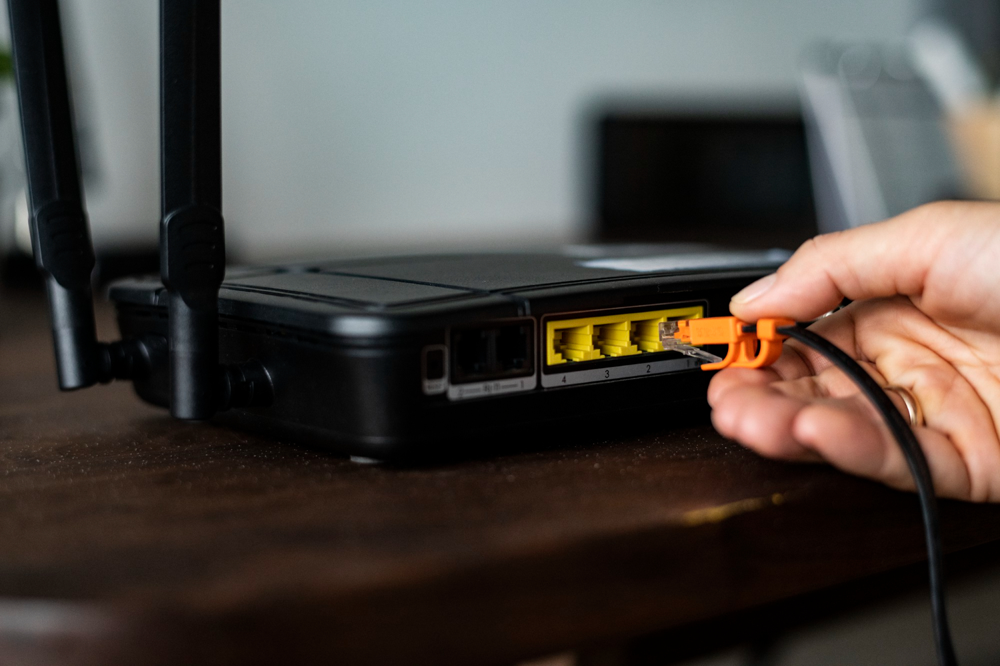

Consejos para mejorar la conexión a Internet
Una conexión a Internet lenta o inestable puede ser muy molesta, sobre todo si estás viendo
videos, navegando o jugando. En algunas ocasiones no es culpa de la empresa que te da el
servicio, sino cómo configurás o usás el dispositivo.

Acá van algunos consejos simples que quizás te ayuden a mejorar la conexión a Internet, tanto por
Wi-Fi como por cable, sin saber demasiado del tema.
Recomendaciones
-
Ubicar correctamente el router:
de ser posible, debemos colocar el router en el medio de la casa, en un lugar alto y que nada
lo bloquee alrededor ni paredes que lo tapen, también tenemos que evitar ponerlo cerca de
electrodomésticos.
-
Usar conexión por cable en lo posible:
conectarse mediante cable Ethernet suele ser más confiable que conectarse por Wi-Fi, ya que
ofrece una mayor estabilidad y velocidad, sobre todo para juegos online o para descargas.
-
Evitar interferencias:
dispositivos como microondas, teléfonos inalámbricos, o redes Wi-Fi cercanas pueden afectar
la señal. Podemos intentar cambiar el canal del Wi-Fi para ver si mejora la conexión.
-
Cerrar aplicaciones que consumen Internet:
los programas o servicios en segundo plano que actualizan o descargan archivos, afectan
la conexión a Internet, por eso es recomendable cerrarlos para mejorar la conexión.
-
Reiniciar el router de vez en cuando:
apagar y encender el router cada tanto puede ayudar a solucionar pequeños fallos de conexión
y a su vez, mejorar el funcionamiento.
Siguiendo estos simples consejos, podremos lograr una conexión a Internet más estable y
aprovechar mejor la velocidad disponible sin tener que cambiar nuestro proveedor.